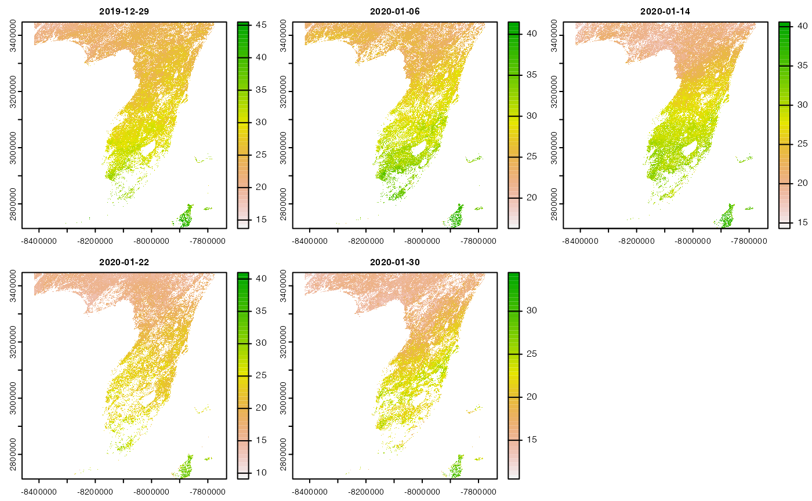
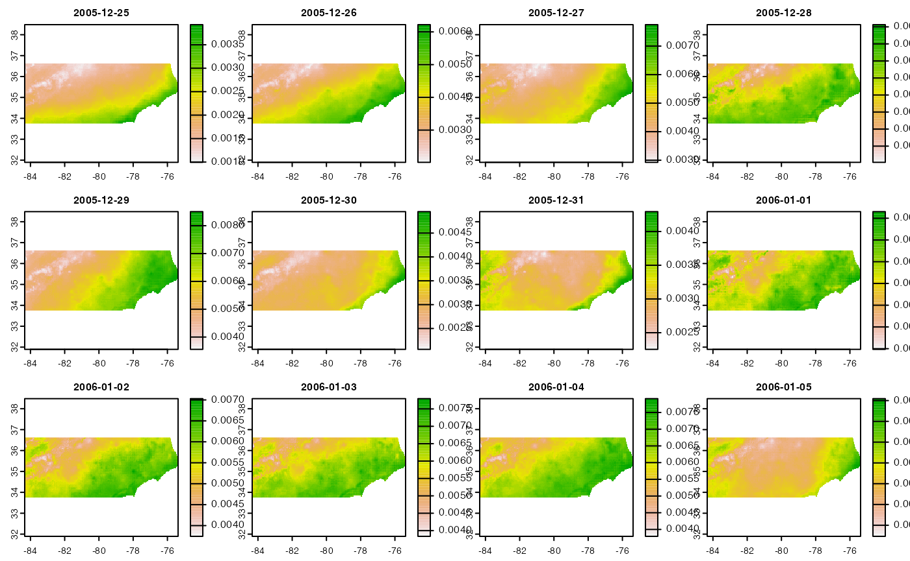

mod = filter(grids, grid.id == "XY_modis")
bboxs = vect(sapply(1:nrow(mod), function(x){ make_vect(mod[x,])}))
AOI_vect = project(vect(AOI::aoi_get(state = "conus")), crs(bboxs))
{plot(bboxs)
plot(AOI_vect, add = TRUE)}
modis_ex = filter(params, id == 'MOD16A2.006', varname == 'PET_500m')
glimpse(modis_ex)
#> Rows: 1
#> Columns: 15
#> $ id <chr> "MOD16A2.006"
#> $ grid.id <chr> "XY_modis"
#> $ URL <chr> "https://opendap.cr.usgs.gov/opendap/hyrax/MOD16A2.006"
#> $ tiled <chr> "XY_modis"
#> $ variable <chr> NA
#> $ varname <chr> "PET_500m"
#> $ long_name <chr> "MODIS Gridded 500m 8-day Composite potential Evapotranspira…
#> $ units <chr> "kg/m^2/8day"
#> $ model <chr> NA
#> $ ensemble <chr> NA
#> $ scenario <chr> NA
#> $ T_name <chr> "time"
#> $ duration <chr> "2001-01-01/2022-02-02"
#> $ interval <chr> "8 days"
#> $ nT <int> 970
system.time({
dap = dap(catolog = modis_ex,
AOI = AOI::aoi_get(state = "FL"),
startDate = "2010-01-01",
endDate = "2010-01-31")
})
#> source: https://opendap.cr.usgs.gov/opendap/hyrax/MOD16A2.006/h10v05...
#> tiles: 4 XY_modis tiles
#> varname(s):
#> > PET_500m [kg/m^2/8day] (MODIS Gridded 500m 8-day Composite potential Evapotranspiration (ET))
#> ==================================================
#> diminsions: 1383, 1586, 5 (names: XDim,YDim,time) 1383, 1586, 5 (names: XDim,YDim,time)
#> resolution: 463.313, 463.313, 8 days
#> extent: -8417233.78, -7776472.29, 2712464.3, 3447278.27 (xmin, xmax, ymin, ymax)
#> crs: +proj=sinu +lon_0= +x_0= +y_0= +units=m +a=6371007...
#> time: 2010-01-02 to 2010-02-03
#> ==================================================
#> values: 10,967,190 10,967,190 (vars*X*Y*T)
#> user system elapsed
#> 3.106 0.931 12.766
tmp = dplyr::filter(params,
id == "maca_day",
variable == "huss",
model == "BNU-ESM")
(select(tmp, id, variable, model, scenario, duration))
#> # A tibble: 3 × 5
#> id variable model scenario duration
#> <chr> <chr> <chr> <chr> <chr>
#> 1 maca_day huss BNU-ESM historical 1950-01-01/2005-12-31
#> 2 maca_day huss BNU-ESM rcp45 2006-01-01/2099-12-31
#> 3 maca_day huss BNU-ESM rcp85 2006-01-01/2099-12-31
maca_ex = filter(tmp, scenario %in% c("historical", 'rcp85'))
system.time({
dap = dap(catolog = maca_ex,
AOI = AOI::aoi_get(state = "NC"),
startDate = "2005-12-25", endDate = "2006-01-05")
})
#> source: http://thredds.northwestknowledge.net:8080/thredds/dodsC/agg...
#> tiles: 2 T tiles
#> varname(s):
#> > specific_humidity [kg kg-1] (Daily Mean Near-Surface Specific Humidity)
#> ==================================================
#> diminsions: 215, 69, 12 (names: lon,lat,time)
#> resolution: 0.042, 0.042, 1 days
#> extent: -84.34, -75.38, 33.75, 36.63 (xmin, xmax, ymin, ymax)
#> crs: +proj=longlat +a=6378137 +f=0.00335281066474748 +p...
#> time: 2005-12-25 to 2006-01-05
#> ==================================================
#> values: 178,020 (vars*X*Y*T)
#> user system elapsed
#> 0.105 0.050 2.119
plot(c(dap$specific_humidity_historical, dap$specific_humidity_rcp85))